社内表彰式の演出アイデア18選｜発表の瞬間を盛り上げる映像・進行のコツと司会台本例【幹事向け】
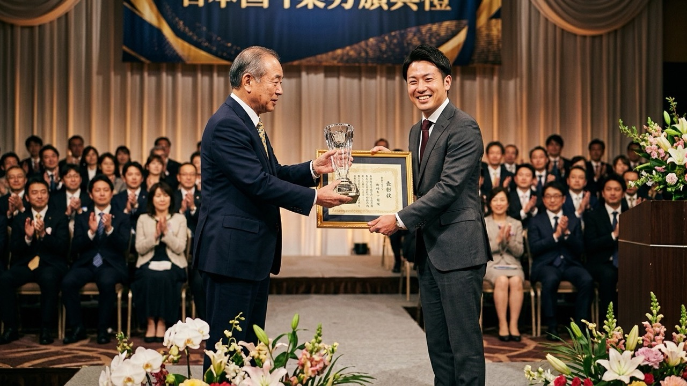
社内表彰式の担当になったものの、毎年同じ流れで「名前を読み上げて、表彰状を渡して、拍手」で終わってしまう。受賞者以外は退屈そうで、どこに工夫を入れればいいのか分からない。そんな悩みを抱えていませんか。
表彰式でいちばん盛り上がるのは、「誰が選ばれたのか」が明かされる発表の瞬間です。照明や会場装飾にお金をかける前に、この瞬間の見せ方を変えるだけで、式の印象は大きく変わります。
この記事では、社内表彰式で使える演出アイデア18個を、開会・発表・登壇・全員参加の4つの場面に分けて紹介します。演出ごとに自分たちで作れるのか、プロに頼むべきかを比較表で整理し、賞の種類と演出の相性、60分の進行表、演出のタイミングを書き込んだ司会台本の例までまとめました。
記事内で紹介している「格付けダービー」「ランキング動画メーカー」「バーチャートレース」は、当サイト（GraphRace Studio）が開発・運営しているツールです。ツールを使わない演出も多数紹介しているので、会社の規模や式の雰囲気に合わせて選んでください。
社内表彰式で演出が大切な理由
社内表彰式の目的は、成果を出した社員を称えることと、その成果を会社全体で共有することです。受賞者本人が嬉しいだけでなく、見ている社員が「次は自分も」「あの部署はこんな工夫をしていたのか」と感じられて、はじめて表彰の価値が組織に広がります。
ところが、演出のない表彰式には次のような問題が起きがちです。
- 受賞者以外が退屈する：名前の読み上げと表彰状の授与が続くだけだと、自分に関係ない時間が長くなります
- 受賞理由が伝わらない：何をして選ばれたのかが分からず、成果の共有という目的が果たせません
- 発表の瞬間に山場がない：誰が受賞するか事前に分かっていたり、淡々と発表したりすると、拍手も控えめになります
演出はこの3つを解決するための道具です。待つ時間に期待感を持たせる、受賞理由を分かりやすく見せる、発表の瞬間に会場の視線を集める。この3点を意識して選ぶと、演出を詰め込みすぎずにメリハリのある式になります。
演出アイデア18選の一覧と比較表
まずは全体像です。演出を「自分たちで作れるもの」と「プロに頼むと質が上がるもの」に分けて考えると、準備の計画が立てやすくなります。準備期間は、社内の担当者が通常業務と並行して進める場合の目安です。
| 場面 | 演出 | 作り方 | 準備期間の目安 | 必要な機材・物 | 効果 |
|---|---|---|---|---|---|
| 開会 | 1. オープニングムービー | 自作／外注 | 2週間〜1か月 | スクリーン、スピーカー | 式への期待感と一体感をつくる |
| 2. 事前のティザー告知 | 自作 | 数日 | 社内チャット、ポスター | 当日までの話題づくり | |
| 3. 式のテーマ設定 | 自作 | 1週間 | なし（装飾に反映） | 演出全体に統一感が出る | |
| 発表 | 4. 封筒を使ったアカデミー賞風発表 | 自作 | 数日 | 封筒、受賞者名のカード | 発表直前の緊張感 |
| 5. ドラムロールとスポットライト | 自作／会場 | 数日 | スピーカー、照明（会場設備） | 発表の瞬間に視線を集める | |
| 6. ヒントを小出しにする受賞者紹介映像 | 自作／外注 | 1〜2週間 | スクリーン | 受賞理由が伝わり、誰か当てたくなる | |
| 7. ランキング形式の発表 | 自作 | 1〜2日 | スクリーン、パソコン | 下位から順に期待感を高める | |
| 8. 部門対抗のレース中継で発表 | 自作 | 1〜2日 | スクリーン、スピーカー | 結果が分かるまで全員が画面に釘付けになる | |
| 9. リアルタイム投票 | 自作／外部サービス | 1週間 | 参加者のスマホ、集計サービス | 参加者が選ぶので納得感が高い | |
| 登壇 | 10. レッドカーペット | 会場／レンタル | 1週間 | カーペット（会場やレンタル会社） | 受賞者が主役になる特別感 |
| 11. 受賞者ごとのテーマ曲 | 自作 | 数日 | スピーカー | 登壇の高揚感、個性が出る | |
| 12. 同僚・家族からのメッセージ動画 | 自作／外注 | 2〜3週間 | スクリーン | サプライズと感動 | |
| 13. オリジナルのトロフィー・表彰状 | 外注 | 2〜4週間 | トロフィー、表彰状 | 形に残る記念になる | |
| 全員参加 | 14. 受賞者予想クイズ | 自作 | 数日 | 予想用紙やフォーム | 受賞者以外も当事者になれる |
| 15. ペンライトや拍手の合図 | 自作 | 1週間 | ペンライト | 会場全体で祝う一体感 | |
| 16. ユニーク賞の新設 | 自作 | 2週間 | なし | 目立たない貢献にも光が当たる | |
| 17. フォトブース | 自作／会場 | 1週間 | 背景パネル、小物 | 写真が残り、式後の社内共有に使える | |
| 18. エンディングで全員の名前を映す | 自作 | 1週間 | スクリーン | 受賞しなかった人も含めて感謝を伝える |
横にスクロールできます
映像制作会社やイベント会社に依頼する場合、費用は内容や規模によって大きく変わります。一例として、ある式典運営会社では式典オープニング動画が110,000円〜、表彰式の企画・運営一式が396,000円〜と案内されています。予算と準備期間に合わせて、「オープニングだけはプロに頼み、発表演出は社内で作る」といった組み合わせも現実的です。
※費用は2026年10月時点で公開されている一例です。依頼先や内容によって異なります。
出典：表彰式や周年祭を盛り上げる動画演出について（ジョイプランニング）
開会・オープニングの演出3選
式の最初の数分で「今日はいつもと違う」と感じてもらえるかどうかが、その後の盛り上がりを左右します。
1. オープニングムービー
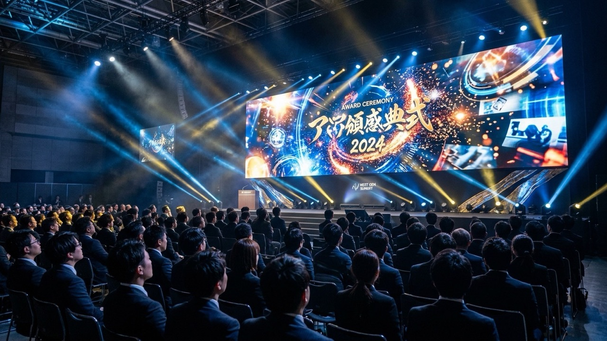
1年間の出来事や社員の働く様子を、写真や動画でまとめて上映します。会場が暗転し、BGMとともに映像が始まると、それだけで式典らしい空気になります。長さは2〜3分が目安です。長すぎると、本題の表彰に入る前に集中力が切れてしまいます。
社内で作るなら、各部署から写真を集め、スライドショー形式でつなぐのがいちばん手軽です。動画編集ソフト（Canva や CapCut など）を使えば、テンプレートに写真やテキストを当てはめるだけで初心者でも見栄えのするムービーを作成できます。売上や会員数など、会社の数字が1年でどう伸びたかを見せたい場合は、数値の推移をアニメーションで見せるグラフ動画を挟むと、「今年はこれだけ頑張った」というメッセージがひと目で伝わります。
バーチャートレースを使うと、部署別や拠点別の数字の推移を、棒グラフが伸びて順位が入れ替わる動画にできます。作り方はバーチャートレース（動く棒グラフ）の作り方完全ガイドで解説しています。
2. 事前のティザー告知
式の1〜2週間前から、社内チャットやポスターで「今年の各賞、まもなく発表」「ノミネート部署はこちら」などと予告します。ポスターやバナー画像は Canva などのデザインツールにあるテンプレートを使うと、デザイナーがいなくても手軽に本格的な告知物を作成できます。受賞者は伏せたままにして、賞の名前とノミネート候補だけを出すと、当日まで社内で話題になります。
3. 式のテーマ設定
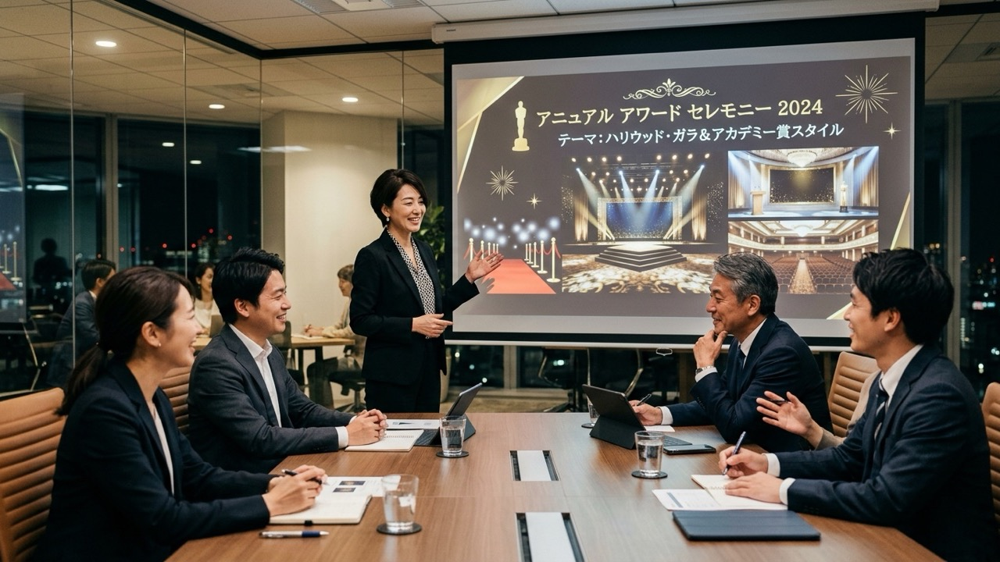
「アカデミー賞風」「スポーツの表彰式風」「ゲームのアワード風」など、式全体のテーマを1つ決めます。テーマが決まると、BGM・スライドのデザイン・司会の口調・発表の演出まで、迷わず統一できます。たとえば「競馬の表彰式風」にするなら、発表演出をレース中継にし、受賞者には優勝レイ風のたすきを掛ける、といった具合です。
受賞者発表の演出6選
表彰式の山場です。ここに演出を1つ入れるだけで、式の印象は大きく変わります。
4. 封筒を使ったアカデミー賞風発表
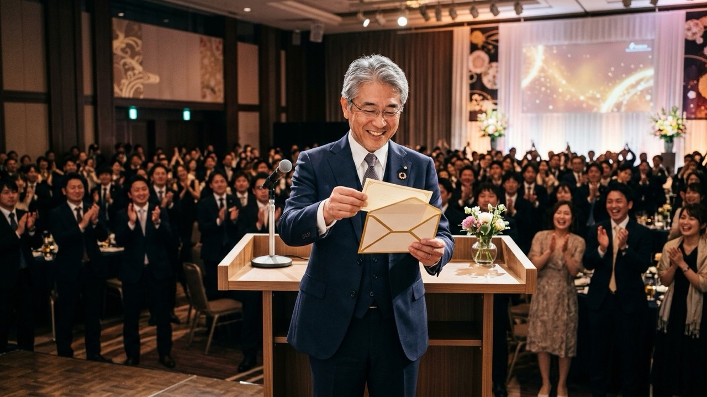
プレゼンター（役員など）が封筒を受け取り、壇上で開封して受賞者を読み上げる定番の演出です。準備は封筒とカードだけで済むのに、開封の数秒間に会場の緊張感がぐっと高まります。読み上げの前に「受賞者は……」と一呼吸おくのがコツです。
5. ドラムロールとスポットライト
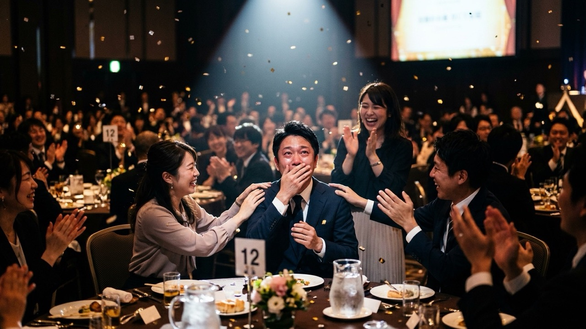
発表の直前に会場を少し暗くし、ドラムロールの効果音を流します。名前が読み上げられた瞬間に効果音を止め、スポットライトを受賞者に当てます。照明は会場の設備によるので、予約時に調光やスポットライトが使えるかを確認しておきましょう。照明がない場合でも、ドラムロールと拍手のタイミングを合わせるだけで十分に盛り上がります。
6. ヒントを小出しにする受賞者紹介映像
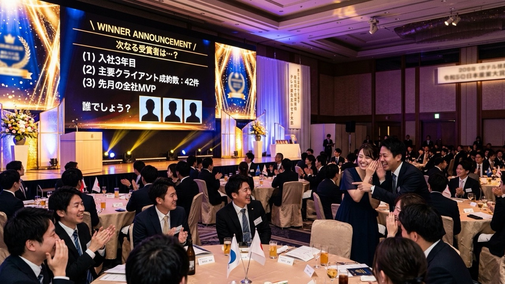
受賞理由を伝える紹介映像を、誰の話か分からない状態から始めて、少しずつヒントを増やしていく構成にします。「今年、新規の取引先を最も多く開拓したのは……」「入社3年目」「休日は草野球チームの監督」と進むうちに、会場が「あの人だ」と気づき始め、最後に名前と写真が出た瞬間に拍手が起きます。
受賞理由の共有という表彰式の目的にも合う、効果の高い演出です。ヒントは本人や上司に事前に確認し、本人が嫌がる情報は使わないようにしてください。
7. ランキング形式の発表
複数の受賞者や候補を、下位から順番に発表して最後に1位を明かす演出です。売上や顧客評価のように順位がはっきりつく賞や、投票で決める賞に向いています。
ランキング動画メーカーでは、順位ごとに名前・説明・画像を入力すると、タイトルに続いてカードが右から1枚ずつ流れてくる動画になります。登場順は「最下位から」と「1位から」を選べるので、表彰式では最下位からにして、最後に1位のカードが現れる形にすると盛り上がります。説明欄に受賞理由を一言入れておくと、司会が読み上げなくても成果が伝わります。
動画として保存するときは、再生中の画面をパソコンの画面録画機能（macOSは Shift+Command+5、Windowsは Win+G など）で録画します。操作の詳しい手順はYouTubeでよく見るランキング動画の作り方で解説しています。
8. 部門対抗のレース中継で発表
部門賞やチーム賞のように複数の部署・チームの中から選ぶ賞なら、発表そのものを競馬中継風のレースにする演出がおすすめです。部署名を付けた馬がスタートし、道中で順位が入れ替わりながら、最後は受賞部署が先頭でゴールします。結果を知っているのは幹事だけなので、会場は自分の部署を応援しながら最後まで画面に釘付けになります。
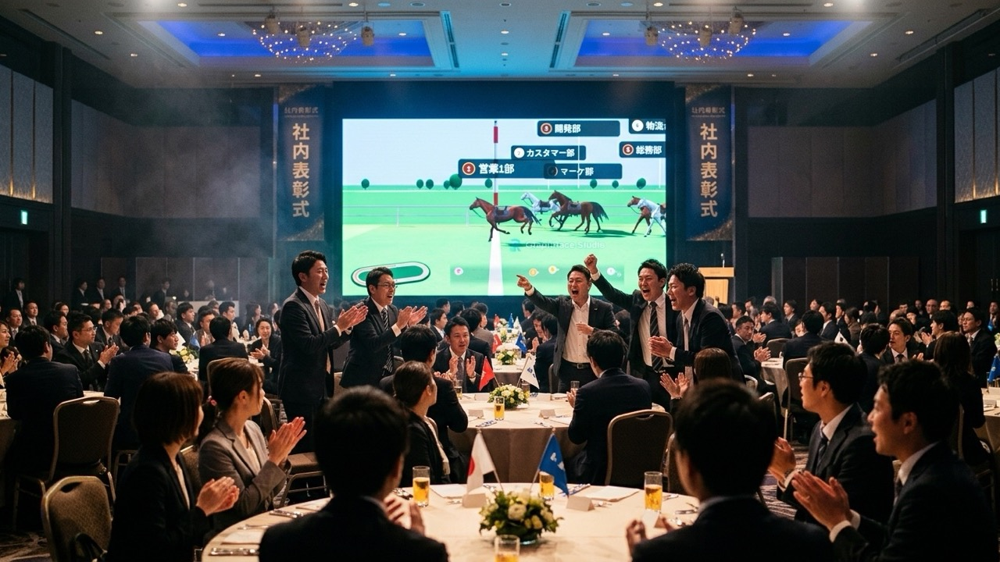
格付けダービーでは、出走馬（最大16頭）をドラッグで並べた順番がそのまま最終着順になります。道中の展開はランダムなので、何度走らせても違うレースになり、それでいてゴールでは必ず設定した順位になります。ゴール後はレース名入りの結果掲示板が表示されるので、そこで受賞部署を発表できます。
3DCGの馬が実際の競馬場のようなコースを走り、カメラが自動で切り替わる「リアル競馬風」の映像は、制作会社に依頼すると高額になるクオリティです。CG制作会社の料金表の一例では、10秒・1カットの3DCGアニメーションで100,000円〜、CGを使った1分前後の動画で500,000円〜とされています。
格付けダービーなら、部署名と着順を入れるだけで同じ水準のレース映像がブラウザ上で完成します。賞ごとに別のレースを作ったり、前日に結果が変わっても作り直したりと、外注では難しい修正にもその場で対応できます。
※費用は2026年10月時点で公開されている一例です。依頼先や内容によって異なります。
出典：CG・3DCG制作の費用・料金相場（CG MAKERS）
表彰式で使うときの手順は次のとおりです。
- 出走馬に部署名を入れ、受賞順に並べるリストの上から1着・2着……の順になります。部署名は10文字以内に収めると画面で読みやすくなります。
- レース名と掲示板のタイトルを賞の名前にするレース名を「2026 年間部門アワード」、掲示板のタイトルを「部門賞 結果発表」のように設定します。
- 表現と展開を選ぶ軽快な2D「競馬風」と、3DCGの馬が競馬場のようなコースを走る「リアル競馬風」から選びます。展開の派手さを「波乱」にすると、道中で順位が大きく入れ替わり、最後まで結果が読めなくなります。
- 録画して動画で持っていく「録画してWebM保存」でレースを始めると、スタートから結果掲示板までが動画ファイルとして保存されます。会場のネット環境に左右されず、当日は再生するだけで済みます。
画面を流れる「GraphRace Studio」の透かしは、設定で表示・非表示を切り替えられます（現時点では無料で非表示にできます）。全設定項目の意味や2Dと3Dの使い分けは、競馬風の順位発表動画「格付けダービー」の作り方で詳しく解説しています。
9. リアルタイム投票
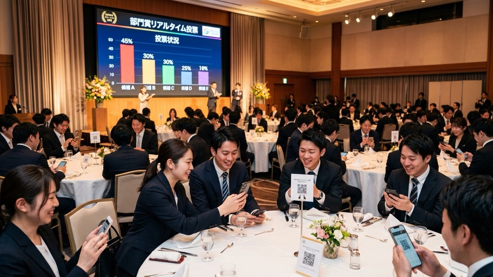
「ベストチーム賞」「MVP」など、社員の投票で決める賞を、式の最中に投票してその場で集計する演出です。Slido や Mentimeter のようなインタラクティブ投票ツールを使えば、参加者がスマホでQRコードを読み取って投票し、集計結果をリアルタイムにスクリーンへ映し出せます。全員が選ぶ側に回るので、結果に納得感が生まれます。
その場で集計するのが難しい場合は、投票は事前に締め切り、結果発表だけを当日の演出にするのが確実です。集計結果を上の「ランキング形式」や「レース中継」で発表すれば、投票した全員が結果を見守る形になります。
受賞・登壇の瞬間の演出4選
名前が呼ばれてから壇上で表彰状を受け取るまでの時間を、受賞者にとって特別なものにする演出です。
10. レッドカーペット
客席からステージまでの通路にカーペットを敷き、名前を呼ばれた受賞者がその上を歩いて登壇します。「特別な人が歩く場所」というイメージが定着しているので、敷くだけで特別感が出ます。会場に備品があるか、レンタルできるかを確認しましょう。
11. 受賞者ごとのテーマ曲
受賞者に事前に好きな曲を聞いておき、登壇のときに流します。本人の個性が出て、周りの社員も「あの人らしい」と盛り上がります。曲を流すのは登壇から表彰状を受け取るまでにして、スピーチの間は音量を絞るようにしてください。市販の曲を使う場合の注意点は当日の注意点でまとめています。
12. 同僚・家族からのメッセージ動画
受賞者の上司や同僚、取引先、家族にお祝いのコメントを撮影してもらい、受賞の直後に上映します。本人に知らせずに準備するとサプライズになり、式でいちばん記憶に残る場面になることも多い演出です。1人あたり15〜30秒、全体で2分以内にまとめると間延びしません。
13. オリジナルのトロフィー・表彰状
会社のロゴや賞の名前を入れたトロフィーや盾、受賞理由を具体的に書いた表彰状を用意します。定型文ではなく「〇〇プロジェクトで納期を2週間短縮した」のように具体的な成果を書いた表彰状は、受け取った本人にとって何よりの記念になります。トロフィーは制作に数週間かかることがあるので、早めに発注しましょう。
参加者全員を巻き込む演出5選
表彰式は受賞者が主役になりがちです。受賞しなかった人も楽しめる仕掛けを入れると、会場全体の空気が変わります。
14. 受賞者予想クイズ
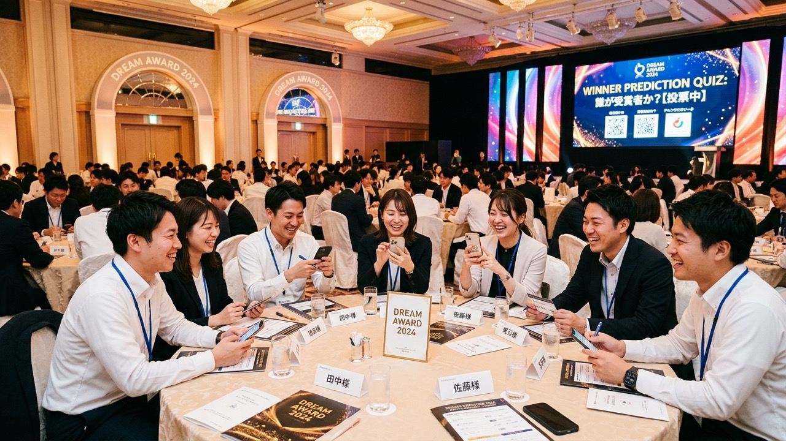
各賞の発表前に、参加者全員に受賞者を予想してもらいます。Google フォーム やクイズアプリ（Kahoot! など）を使ってスマホから手軽に回答を集め、的中した人には小さな景品を用意すると、受賞者以外も発表の瞬間を自分ごととして待てるようになります。上の「レース中継」と組み合わせると、どの部署が1着になるかを予想する競馬さながらの楽しみ方ができます。
15. ペンライトや拍手の合図
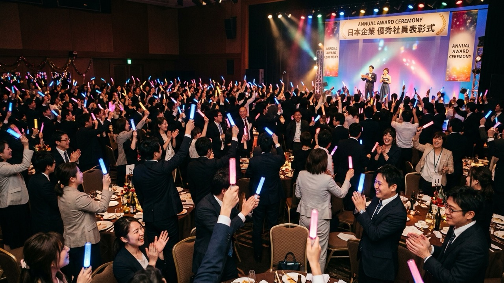
参加者にペンライトを配り、受賞者の登壇時に一斉に振ってもらいます。ペンライトを用意しない場合でも、司会が「受賞者が壇上に上がるまで拍手を続けてください」と最初に伝えておくだけで、拍手が途切れず会場の一体感が生まれます。
16. ユニーク賞の新設
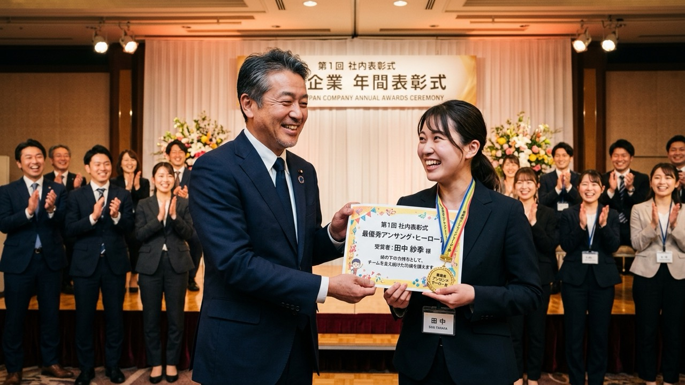
売上などの数字だけでは評価されにくい貢献に光を当てる賞を、いくつか加えます。「縁の下の力持ち賞」「ナイスチャレンジ賞」のような賞は、受賞者の幅が広がり、多くの社員が「自分も対象になりうる」と感じられます。賞の名前の例はそのまま使える賞の名前の例にまとめました。
17. フォトブース
会社のロゴや賞の名前を入れた背景パネルを用意し、受賞者がトロフィーを持って撮影できる場所を作ります。撮った写真は式後に社内報やチャットで共有でき、参加できなかった社員にも式の様子を伝えられます。
18. エンディングで全員の名前を映す
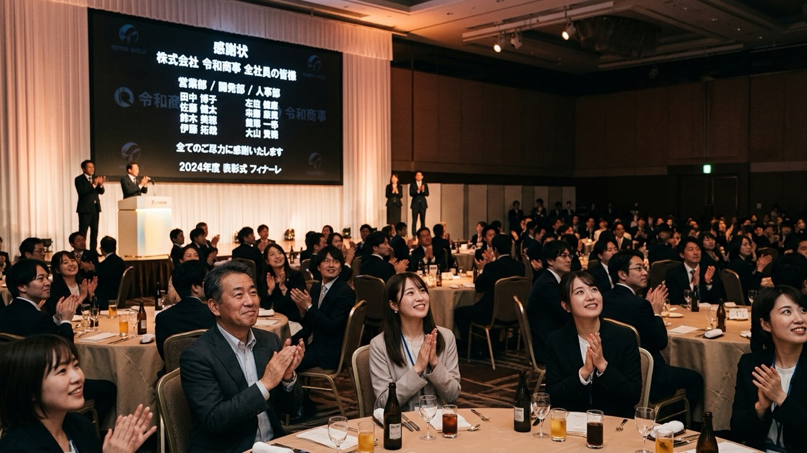
式の最後に、映画のエンドロールのように全社員の名前をスクリーンに流します。「受賞者だけでなく、一人ひとりの力が会社を支えている」というメッセージになり、受賞しなかった人も気持ちよく式を終えられます。
賞の種類別・おすすめの発表演出
演出は、賞の性格に合っていることが大切です。厳かに称えたい賞にエンタメ寄りの演出を使うと、かえって受賞者に失礼になることもあります。賞の種類ごとに相性のよい演出をまとめました。
| 賞の種類 | 相性のよい発表演出 | 避けたい演出 |
|---|---|---|
| 最優秀社員賞・社長賞 | 封筒での発表、ヒントを小出しにする紹介映像、メッセージ動画 | レース中継など遊びの要素が強いもの |
| 部門賞・チーム賞 | 部門対抗のレース中継、ランキング形式 | 個人名だけを読み上げる発表 |
| 売上・成績ランキング | ランキング形式（下位から発表）、数字の推移を見せるグラフ動画 | 下位の順位まで細かく出す発表 |
| 新人賞 | 紹介映像、上司や先輩からのメッセージ動画 | 候補者を並べて順位をつける発表 |
| 社員投票の賞 | リアルタイム投票、受賞者予想クイズ、レース中継 | 投票結果の得票数をすべて公開する発表 |
| ユニーク賞 | ランキング形式、テーマ曲での登壇 | 本人が嫌がる可能性のある「いじり」の要素 |
| 永年勤続表彰 | メッセージ動画、在籍年数分の写真を使ったスライド | 人数が多い場合の1人ずつの長い紹介 |
ひとつの式の中で、厳かな賞は封筒や紹介映像、楽しい賞はレースやランキングと使い分けると、式全体にメリハリが出ます。ランキングの見せ方には、ほかにもカウントダウン形式やトーナメント形式などがあります。演出の種類をもっと比べたい場合は、順位発表動画の作り方｜演出6タイプと無料ツール・素材まとめも参考にしてください。
そのまま使える賞の名前の例
賞の名前ひとつで、式の雰囲気や「何を評価する会社なのか」が伝わります。定番の賞に加えて、ユニークな賞をいくつか用意すると、受賞者の幅が広がります。
| 分類 | 賞の名前の例 | 評価する内容 |
|---|---|---|
| 業績・成果 | MVP／社長賞 | 年間を通じて最も大きな成果を上げた人 |
| ゴールブレイカー賞 | 目標を大きく上回った人やチーム | |
| ベストチーム賞 | チームとして優れた成果を上げた部署 | |
| 成長・挑戦 | ルーキー・オブ・ザ・イヤー | 今年度入社で最も活躍した人 |
| ナイスチャレンジ賞 | 結果にかかわらず新しいことに挑戦した人 | |
| 急成長で賞 | 1年で大きくスキルを伸ばした人 | |
| 支援・貢献 | 縁の下の力持ち賞 | 裏方としてチームを支えた人 |
| ベストティーチャー賞 | 後輩の育成に力を尽くした人 | |
| 秒速レスポンス賞 | 社内外への対応が誰よりも早い人 | |
| サンクス賞 | 社内で最も「ありがとう」を集めた人 | |
| 職場づくり | 職場の太陽賞 | 職場を明るくしてくれた人 |
| 業務改善アイデア賞 | 仕事の進め方をよりよく変えた人 |
ユニーク賞は、受賞者本人が人前で呼ばれて嬉しいと感じる名前かどうかを基準に選んでください。笑いを取ることを優先して本人の短所をいじるような名前は、ハラスメントと受け取られるおそれがあります。
進行表と司会台本の例（60分）
社内の会議室やホールで行う、60分の表彰式を想定した進行例です。演出を入れるタイミングを「キュー」として書き込んであります。映像や音響の担当者と、この進行表を共有しておくと当日の連携がスムーズになります。
| 時間 | 内容 | 演出のキュー |
|---|---|---|
| 0:00〜0:05 | オープニング | 暗転→オープニングムービー上映 |
| 0:05〜0:10 | 開会の言葉・趣旨説明 | 明転、司会にスポットライト |
| 0:10〜0:15 | 社長あいさつ | 今年の数字の推移をグラフ動画で映す |
| 0:15〜0:25 | 新人賞・ユニーク賞の発表 | ランキング動画を再生→受賞者のテーマ曲で登壇 |
| 0:25〜0:35 | 部門賞の発表 | 受賞部署予想→レース中継を再生→結果掲示板で発表 |
| 0:35〜0:50 | 最優秀社員賞の発表 | ドラムロール→紹介映像→封筒で発表→メッセージ動画 |
| 0:50〜0:55 | 受賞者代表のスピーチ | BGMの音量を下げる |
| 0:55〜1:00 | 閉会の言葉・記念撮影 | エンドロールで全社員の名前を映す |
横にスクロールできます
以下は、演出のキューを入れた司会台本の例です。会社名や賞の名前を置き換えて使ってください。
【開会】
皆さま、お待たせいたしました。ただいまより、2026年度 株式会社〇〇 社内表彰式を開会いたします。本日司会を務めます、〇〇部の〇〇です。どうぞよろしくお願いいたします。
はじめに、今年1年の歩みを映像で振り返ります。スクリーンにご注目ください。
【暗転→オープニングムービー上映】
【部門賞の発表】
続いて、部門賞の発表です。今年ノミネートされたのは、こちらの5部署です。どの部署が栄冠を勝ち取ったのか、結果はこれから始まるレースでお届けします。ぜひご自分の部署を応援してください。
【レース中継の動画を再生】
……ゴール！ 今年の部門賞は、〇〇部です！ 〇〇部の皆さま、どうぞ前へお進みください。会場の皆さま、盛大な拍手をお願いいたします。
【受賞部署のテーマ曲→登壇】
【最優秀社員賞の発表】
いよいよ最後の賞です。今年度、最も大きな成果を上げた社員に贈られる最優秀社員賞。プレゼンターは代表取締役の〇〇です。
【ドラムロール→受賞者紹介映像】
それでは、発表をお願いいたします。
【プレゼンターが封筒を開封→名前の読み上げ→スポットライト】
【閉会】
以上をもちまして、2026年度 社内表彰式を終了いたします。受賞された皆さま、本当におめでとうございました。そして、今年1年を支えてくださった社員の皆さまにも、心から感謝申し上げます。
【エンドロールで全社員の名前を上映】
当日に失敗しないための注意点
- 本番と同じ機材で通しのリハーサルをする：映像の再生、音の出方、マイクの切り替えを、本番と同じパソコンと会場で一度は確認します。動画は再生ソフトの全画面表示でも試しておきましょう
- 動画はファイルで持っていく：ブラウザで動く演出も、録画して動画ファイルにしておくと、会場のネット環境やパソコンの性能に左右されません
- パソコンの通知を切る：投影中にチャットやメールの通知が映らないよう、集中モードなどで通知を止めておきます
- 受賞者の情報を本人に確認する：紹介映像のエピソードや写真は、本人や上司に事前に確認します。サプライズの場合も、上司など近い人に内容をチェックしてもらいましょう
- 順位の出し方に配慮する：個人の下位順位を全員の前で出すのは避け、発表するのは上位やノミネート者に絞ります
- オンライン参加者にも見えるようにする：会場と配信のハイブリッドで行う場合は、スクリーンに映す映像を配信画面にも共有し、音声が配信に乗るかも確認します
- 音楽の扱いを確認する：社内で非営利・無料・出演者に報酬なしの条件で上映するだけなら、市販の曲を許諾なく使える場合があります（著作権法38条）。一方、式の様子を録画して社外に公開する場合は対象外になるため、著作権フリーの音源を使うのが安全です
よくある質問（FAQ）
社内表彰式の演出は、いくつくらい入れればいいですか？
60分程度の式なら、オープニングに1つ、受賞者発表に1〜2つ、締めに1つの合計3〜4つが目安です。演出を詰め込みすぎると、受賞者の紹介やスピーチの時間が削られてしまいます。最も重要な賞の発表に、いちばん手間をかけた演出を当てるとメリハリが出ます。
演出は社内で作るのと、プロに頼むのとどちらがいいですか？
オープニングムービーのように映像の完成度が印象を左右するものはプロに頼むと質が上がります。一方、受賞者の発表演出は社内の事情に合わせて直前まで調整することが多いため、社内で作れる方法を選ぶと柔軟に対応できます。予算と準備期間に応じて組み合わせるのが現実的です。
少人数の会社でも演出は必要ですか？
少人数でも、発表の瞬間に一工夫するだけで式の印象は変わります。封筒での発表や受賞者予想クイズのように、準備が少なく人数に関係なく使える演出から取り入れてみてください。
オンラインやハイブリッドの表彰式でも使えますか？
使えます。ランキング動画やレース中継の動画、紹介映像は、オンライン会議の画面共有でそのまま参加者全員に見せられます。動画を再生するときは、画面共有の設定で音声も共有するのを忘れないようにしてください。
部門対抗のレース中継で、最下位の部署が気まずくなりませんか？
結果掲示板には全頭の着順が表示されるため、出走させるのはノミネートされた部署だけに絞るのがおすすめです。全部署を走らせる場合は、司会が「ノミネートされた時点で全部署が称賛の対象です」とひと言添えると、和やかな雰囲気で発表できます。
表彰式で流すBGMに市販の曲を使ってもいいですか？
社内で非営利・無料・出演者に報酬なしの条件で上映するだけなら、許諾なく使える場合があります（著作権法38条）。一方、録画した動画を社外に公開する場合は対象外になるため、著作権フリーの音源を使うのが安全です。外部の会場を使う場合は、会場側のルールも事前に確認してください。
まとめ
社内表彰式の演出は、数を増やすことよりも、発表の瞬間をどう見せるかに力を注ぐほうが効果的です。賞の性格に合った演出を選び、受賞者以外も楽しめる仕掛けを1つ加えるだけで、毎年同じだった式が記憶に残るイベントに変わります。
- 演出は期待感・受賞理由の共有・発表の瞬間の3点を意識して選ぶ
- オープニングはプロ、発表演出は社内で作るなど、自作と外注を組み合わせる
- 厳かな賞は封筒や紹介映像、部門賞や投票の賞はランキングやレース中継と使い分ける
- 個人の下位順位は出さず、ノミネート者に絞って発表する
- 動画は事前に録画し、本番と同じ機材でリハーサルする
部署名を入力して受賞順に並べるだけ。道中は毎回違う展開でも、ゴールは必ず設定どおりの着順になります。録画してWebM動画で保存できます。